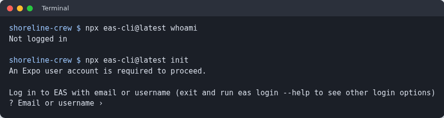

🏗️ Lesson 9.2: Development Builds and EAS Build
Since Lesson 1.2, Shoreline Crew has borrowed someone else's app: Expo Go. Today it gets its own. You turn the project into a development build that carries Shoreline Crew's name, icon, ids and permission sentences, describe your three variants as build profiles, and let Expo's build servers turn your code into an app you install on a phone, with an honest look at what the free plan gives you and what costs money.
🎯 Learning Objectives
By the end of this lesson, you will be able to:
- Say when Expo Go is no longer enough, and which parts of Shoreline Crew need a build of their own
- Explain what a development build is, add
expo-dev-client, and say which changes need a new build and which only need Metro - Write
eas.jsonwith development, preview and production profiles that setAPP_VARIANTand the API address, and test them on your computer - Link the project to an Expo account by hand when the config is
app.config.ts, and keep keys in EAS environment variables - Start a cloud build, read its queue and limits honestly, install the result on an Android phone or emulator, and name what an iPhone build costs
- Choose between a cloud build and a local build, and say what each needs on your computer
📦 Code for this lesson
Starting code: lesson-33-start.zip · Finished code: lesson-33-end.zip. Each folder has a README with the commands to run it.
In This Lesson
👋 Welcome: An App of Your Own
Lesson 9.1 wrote the label for three apps: Shoreline Dev, Shoreline Preview and Shoreline Crew, each with its own id, icon, permission sentences and settings. Nothing on your phone shows any of it yet, because Expo Go is one app that opens many projects and keeps its own label. Today the label goes on a real bag.
By the end of this lesson:
- Shoreline Dev is installed on an Android phone or emulator: your own development app, with Shoreline Crew's icon and sentences, still loading your JavaScript from Metro with Fast Refresh.
- Shoreline Preview sits next to it: a release build with the JavaScript inside, the kind of app a crew leader tests before volunteers get it.
eas.jsondescribes how each variant is built, and a test proves each profile produces the app it should, before you spend a single cloud build on it.
Why it matters for your work: most real React Native jobs work with development builds, not Expo Go, because real apps use native libraries Expo Go does not carry. "Can you make a build for the client to try?" is one of the first things a new mobile developer is asked, and knowing what a build costs in time and money, and what it needs from Apple and Google, is what lets you answer with a date instead of a guess.
🌱 Builds fail, and that is normal
Your first cloud build may fail. Almost everyone's does: a missing setting, a typo in a profile, an answer to a prompt you were not sure about. A failed build costs you a few minutes and gives you a log that names the problem. Today you will also catch the most common profile mistakes on your own computer first, in a second, with a test. Read the first error, fix one thing, try again: that is the whole skill.
🧰 When Expo Go Is Not Enough
Expo Go is an app in the stores with a fixed set of native modules inside, built for one Expo SDK. Your JavaScript can use everything in that set and nothing else. For learning, that is perfect: no build, no account, a QR code. For shipping, it stops at a few walls, and Shoreline Crew has reached several of them:
| What Shoreline Crew needs | In Expo Go | In your own build |
|---|---|---|
| Its name, icon, splash and ids (Lesson 9.1) | Expo Go's name and icon; it runs as host.exp.Exponent | Shoreline Dev, Preview or Crew, each with its own id |
| Its own permission sentences, no Face ID sentence (6.1 to 6.3, 9.1) | Expo Go asks in its own words, once for every project | Your sentences; nothing asked that the app does not use |
| The white notification icon and Sea Teal color (6.4, 9.1) | Expo Go's icon | Yours |
| Google Maps in Android builds (6.3) | Works with Expo Go's own key | Needs your key (ANDROID_GOOGLE_MAPS_API_KEY) |
| Plain http for the preview variant (9.1) | Allowed for development | Set per variant by expo-build-properties |
| Push notifications from a server (6.4) | Not on Android | Possible: a build, an EAS project id and push credentials |
| A native library Expo Go does not include (such as the keyboard library Lesson 5.4's FAQ mentioned) | Red screen: the native module is missing | Included, because your build compiles what you installed |
| An older or newer Expo SDK than the store Expo Go | Expo Go runs one SDK at a time | Your build runs the SDK it was built with, for as long as you like |
None of this means Expo Go was a mistake. Everything Shoreline Crew does so far still runs in it, and you can keep using it for quick checks (Step 2 shows how to switch). From now on, though, the app you test is the app you ship.
🧪 What a Development Build Is
A development build is a debug build of your own app with Expo's developer tools added by the expo-dev-client package. It behaves like Expo Go in the ways you care about while coding: it loads your JavaScript from Metro on your computer, Fast Refresh works, m opens the developer menu and j the debugger (Lesson 8.4). But the native part is yours: your native modules, your config plugins, your name and icon.
| Expo Go | Development build | Release build (preview, production) | |
|---|---|---|---|
| Native code | Expo's fixed set | Yours | Yours |
| JavaScript | From Metro | From Metro | Inside the app (Hermes bytecode, Lesson 1.1) |
| Developer menu, Fast Refresh | Yes | Yes | No |
| Who installs it | Anyone, from a store | You and your team | Testers (preview) or everyone (production) |
| Built by | Expo | You, once, and again when native code changes | You, for every release |
The last row is the question you will ask most often: does this change need a new build? The rule is simple once you see the split. JavaScript (screens, hooks, styles, tests, EXPO_PUBLIC_ values for Metro) travels from Metro every time you open the app: no build. Native things are compiled into the app: installing a package with native code, adding or changing a config plugin's options, and changing the native fields of app.config.ts (name, ids, icons, permissions) all need a new development build.
💡 Mental model: your own field kit
Lesson 1.1 called the native modules an app carries its field kit. Expo Go is the rental kit at the beach hut: well stocked, with the hut's label on the bag, and you cannot add a tool to it. A development build is your own kit, packed with exactly the tools Shoreline Crew uses and your label stitched on. The plan for the day (your JavaScript) still arrives by radio from Metro, so you can change the plan without repacking. Add a new tool, and you pack the bag again: that is a new build.
expo-dev-client also changes what npx expo start does. Once it is installed, the QR code opens your development build instead of Expo Go, and the terminal says so (Step 2). Its launcher screen, the first thing the development build shows, lists the Metro servers it finds on your network and lets you type an address, so the same Wi-Fi and WSL rules from Lessons 1.2 and 5.1 still apply.
☁️ How EAS Build Works, and What It Costs
Building an Android app needs the Android SDK and a Java toolchain; building an iPhone app needs a Mac with Xcode. EAS Build (EAS: Expo Application Services) runs those builds on Expo's servers, so a Windows or Linux computer can produce both. You drive it with EAS CLI, a command-line tool you run with npx eas-cli@latest, the same way you run create-expo-app: always the current version, nothing installed globally (the template's AGENTS.md says the same).
- On your computer, EAS CLI reads the build profile from
eas.jsonand evaluatesapp.config.tswith that profile's variables. It does not load.env.localfor this (read in EAS CLI's source for this lesson), soAPP_VARIANTand the API address must come from the profile. Your Lesson 9.1 guards run here: a bad profile stops before anything is uploaded. - It uploads your project, leaving out what
.gitignorelists:node_modules,.env.local, theandroidandiosfolders. Your keys in.env.localstay on your computer. - The build waits in a queue for a free build server.
- The server runs
npm ci, generates the native projects with prebuild (everything you read with--type introspectin Lesson 9.1), and compiles them. - It signs the app. Android apps are signed with a keystore, which EAS can create and keep for you; iPhone apps need certificates and profiles from Apple.
- You get a link (and a QR code in the terminal) to install the build, and the build's page on expo.dev with its logs.
The free plan, honestly
EAS Build has a free plan, and it is enough for this course. What it includes changes over time, so read Expo's pricing page before you plan around it. When this lesson was written, the page listed for the Free plan: up to 15 Android and 15 iOS builds per month (the billing docs say the limits reset monthly), a low-priority queue, and a 45-minute build timeout. The cheapest paid plan was Starter at $19 a month plus usage, which adds a high-priority queue and build credit. None of these numbers are promises: check the page.
The number that shapes your day is the queue. A small Android build takes a few minutes of actual building; on the free plan, it can wait in line before that, sometimes briefly and sometimes much longer, depending on how busy Expo's servers are. EAS CLI shows the wait while it happens (it prints "Waiting in Free tier queue" and an estimate). This lesson plans about 30 minutes of waiting for two Android builds and gives you work to do meanwhile; if your queue is longer, nothing is wrong, and the build will finish while you do something else.
A build counts against the monthly limit whether it succeeds or fails, which is one more reason to test profiles on your own computer first (Step 4).
| What it costs | When you need it | Needed for this lesson? |
|---|---|---|
| Expo account | Every EAS command | Yes: free |
| Android builds on the free plan | Development and preview builds | Yes: free, within the monthly limit |
| Apple Developer Program (Expo's docs name $99 a year) | Any build that installs on a real iPhone; the App Store | No |
| Google Play developer account (Expo's docs name a one-time $25) | Publishing to Google Play (Lesson 9.4) | No: Android builds install without it |
| A paid Expo plan | Shorter queues, more builds | No |
🧩 Version note: EAS Build or Expo Build
This lesson was checked with EAS CLI 27.10.0 (npx eas-cli@latest picks the newest, so your version may be higher). Expo's website has started to call the services "Expo Build" and "Expo Update" while the command is still eas and the docs still say EAS in many places. They are the same service; if a page or a prompt words something differently from this lesson, the newer wording wins.
📋 Build Profiles in eas.json
eas.json, next to package.json, tells EAS how to build. Its build section has one build profile per kind of build, and you pick one with --profile. Shoreline Crew's three profiles match Lesson 9.1's three variants:
| Profile | Key settings | What you get |
|---|---|---|
development | developmentClient: true, distribution: "internal", APP_VARIANT development | Shoreline Dev: a debug build with the dev client, installed from a link |
preview | distribution: "internal", APP_VARIANT preview, the API address | Shoreline Preview: a release build with the JavaScript inside, installed from a link |
production | APP_VARIANT production, store distribution (the default), autoIncrement | Shoreline Crew for the stores (Lesson 9.4): an Android App Bundle and an App Store build |
distribution: "internal"means "installed directly, not from a store". For Android, EAS then makes an APK (the file a phone installs from a link) instead of the App Bundle Google Play wants (read in EAS CLI's source). For iPhones, it means ad hoc signing for registered devices ("Installing Builds on Phones").envsets environment variables for this profile: while EAS CLI evaluatesapp.config.tson your computer, and on the build server. This is where Lesson 9.1's promise is kept: each profile setsAPP_VARIANT.environmentnames a set of EAS environment variables, values you store on expo.dev for the project (development, preview, production). They are the build service's secret drawer: the right home for the Google Maps key. If a name is in both places, the profile'senvwins (EAS CLI warns about it).cli.appVersionSource: "remote"andautoIncrementlet EAS count build numbers for you. That is whateas build:configurewrites too; Lesson 9.3 explains versions.
The preview profile carries EXPO_PUBLIC_API_URL because a preview build has its JavaScript inside: Metro will not be there to read your .env.local. The address is baked in when the build is made, so the preview build talks to that address until you build again (or, in Lesson 9.3, send it an update). It is not a secret (Lesson 9.1), so it may live in eas.json, which you commit.
The production profile has no API address at all. That is on purpose: there is no https server for Shoreline Crew yet, and Lesson 9.1's guard refuses to make a production config without one. The profile is ready for the day there is one (Lesson 9.4 and your own app in Module 10).
💡 Mental model: the packing list
app.config.ts is the label on each bag; eas.json is the packing list the crew at the depot follows: "for the practice kit, add the radio; for the testers' kit, write today's meeting point inside the lid". The depot never sees your desk drawer (.env.local), so anything the kit needs must be on the list or in the depot's own locked drawer (EAS environment variables).
📲 Installing Builds on Phones
Android: a link and a tap
An internal Android build is an APK file. When a build finishes, EAS CLI prints a QR code and a link to the build's page; open it on the phone (scan the QR code with the camera, or send yourself the link), tap Install, and download the APK. Android then asks you to allow installing apps from that browser (the setting is called something like "Install unknown apps", and the wording varies by phone maker) and may show a Google Play Protect warning, because the app did not come from the store. Allow it for your own builds only. On the Android emulator, EAS CLI offers to install and open the build for you when it finishes; you can also drag the APK onto the emulator window.
Because Lesson 9.1 gave each variant its own id, Shoreline Dev and Shoreline Preview install side by side, and installing a newer build of the same variant replaces only that one.
iPhone: an Apple account first
Apple decides what runs on an iPhone. There are three ways in, and only one is free:
| Way | What it needs | Cost |
|---|---|---|
iOS Simulator build ("ios": { "simulator": true } in a profile) | A Mac with Xcode to run the Simulator | No Apple membership |
| Internal (ad hoc) build for real iPhones | Apple Developer Program; each iPhone registered first with npx eas-cli@latest device:create (a link or QR code you open on the iPhone); a new build after adding a device; Developer Mode turned on in the iPhone's settings | Apple Developer Program (Expo's docs name $99 a year) |
| TestFlight and the App Store (Lesson 9.4) | Apple Developer Program, App Store Connect | The same membership |
Expo's docs add a few honest details: ad hoc builds are limited to 100 registered iPhones a year, Apple can take a day or more to accept a newly registered device on a new membership, and EAS CLI can create the certificates and profiles for you once you sign in with your Apple account. You do not need any of this to finish the course. If an iPhone is your only phone and you do not have a Mac, use the Android emulator for builds, and keep using Expo Go on the iPhone for JavaScript work.
📱 On your phone
The first time Shoreline Dev opens, you should see its own splash (Sand, or night blue in dark mode), then the development launcher: a list of development servers, and a field to enter a URL. Choose your computer's server. Later, asking for location on the cleanup screen shows Shoreline Crew's sentence, and a reminder shows the white sun-and-waves icon. None of this could be checked on the machine this course was written on (no Android emulator or phone); if your build shows something different, trust the build and Expo's docs.
💻 Building on Your Own Computer
Cloud builds are not the only way. With the native tools installed, your computer can build too, with no queue and no monthly limit:
| Command | What it does | What it needs |
|---|---|---|
npx expo run:android | Runs prebuild (creates android/), compiles a debug build, installs it on the emulator or a phone connected by USB, starts Metro | Android Studio (with its SDK and Java), several GB of disk, a connected device or the emulator. No Expo account |
npx expo run:ios | The same for the iOS Simulator or a connected iPhone | A Mac with Xcode; a real iPhone also needs signing (a free Apple account works for your own iPhone for a short time; check Apple's current rules) |
npx eas-cli@latest build --local | Runs the same build steps as the cloud, on your computer, using eas.json | macOS or Linux (Windows is not supported; WSL is not officially tested), Node, the Android SDK and NDK (Android), Xcode, fastlane and CocoaPods (iOS), and an Expo login |
For learners, the trade is clear: local builds cost setup time and disk space and save queue time; cloud builds cost queue time and save setup. Many teams use both: npx expo run:android during the day, EAS for builds other people install. Shoreline Crew's .gitignore already lists /android and /ios, so the folders a local build creates never reach your repository (Lesson 9.1's Exercise 3 met them).
⚠️ Common Mistakes
The outputs below were printed by the real tools on this course's project. Commands that need an Expo account could not be run for this lesson; for those, the messages are quoted from EAS CLI 27.10's source code, and your terminal may word them slightly differently.
⚠️ Expecting EAS to write the project id into app.config.ts
With app.json, eas init (and the first eas build) save the new project's id in the file for you. With a dynamic config they cannot, exactly as npx expo install could not add plugins in Lesson 9.1. EAS CLI creates the project on expo.dev, then prints a warning that begins "Your project uses dynamic app configuration, and the EAS project ID can't automatically be added to it", shows the id inside a small JSON block, and stops with "Cannot automatically write to dynamic config at: app.config.ts". The project exists; only the id is missing. Copy it into easProject in app.config.ts (Step 5) and run the command again. Running it again without pasting just repeats the message.
⚠️ Counting on .env.local in a cloud build
.env.local is in .gitignore, so it is never uploaded, and EAS CLI does not load it when it reads your config either. A preview profile without EXPO_PUBLIC_API_URL builds fine, and then the installed app shows Lesson 5.1's message on every screen that loads data: EXPO_PUBLIC_API_URL is not set: copy .env.example to .env.local, then restart Metro. That advice is right for Metro and useless for an installed build: the fix is the profile's env (or an EAS environment variable) and a new build. Step 4's test catches it before you build: it checks that the preview profile has an address.
⚠️ Building the production profile before there is an https server
Lesson 9.1's guard runs wherever the config is read, and EAS CLI reads it on your computer before uploading anything. You can see exactly what it sees by reading the config the way EAS does, with the profile's variables and without .env.local (EXPO_NO_DOTENV=1 tells Expo to skip it):
EXPO_NO_DOTENV=1 APP_VARIANT=production npx expo config --type publicExpected output (the start)
Error: Error reading Expo config at ~/shoreline/shoreline-crew/app.config.ts:
A production build needs an https:// EXPO_PUBLIC_API_URL, not "".
Error: A production build needs an https:// EXPO_PUBLIC_API_URL, not "".
...That is the guard doing its job: not "" because the production profile sets no address at all. npx eas-cli@latest build --profile production stops with the same message, and no build is used up. Production builds wait for an https home for the API.
⚠️ A typo in eas.json
EAS CLI checks eas.json against its own rules before it builds. Write "distribution": "interal" or "devClient": true, and it stops with eas.json is not valid. and one line per problem, such as "build.preview.distribution" must be one of [store, internal] or "build.development.devClient" is not allowed (checked for this lesson with EAS CLI's own eas.json reader). Read the path in quotes: it names the profile and the key. A misspelled value inside env, such as "APP_VARIANT": "prevue", passes that check, because EAS cannot know your variants; that is what Step 4's test is for.
⚠️ Adding a native package and not rebuilding
After npx expo install of a package with native code, Metro happily bundles the JavaScript that imports it, and the development build you installed last week has no native half for it. The app shows a red screen saying a native module cannot be found (the exact words depend on the package). Nothing is wrong with your code: make a new development build. The reverse mistake costs time instead: a JavaScript-only change never needs a build, only Metro.
⚠️ The development build cannot find Metro
A development build still loads JavaScript over your network, so everything Lesson 1.2 said about Expo Go applies: same Wi-Fi, a firewall that allows port 8081, and on Windows with WSL either mirrored networking or Node in Windows (Troubleshooting: WSL). If the launcher lists no server, type the address from the › Metro: line's http://…:8081 part into its URL field, or scan the QR code from npx expo start.
🛠️ Project: Shoreline Crew's First Builds
You sign in to EAS, add the development client, write and test the build profiles, link the project, start two Android builds, and install Shoreline Dev and Shoreline Preview. Steps 6 to 8 overlap: the builds run on Expo's servers while you work. You need a free Expo account, and an Android phone or the Android emulator for Steps 8 and 9. With only an iPhone and no paid Apple membership, do Steps 1 to 7, then read Steps 8 and 9 and the exercises: the builds are optional, the understanding is not.
Step 1: An Expo account and EAS CLI (10 min)
If you have not yet, create a free account at expo.dev (an email address, a username and a password). Your username becomes part of your project's address on expo.dev, so pick one you are happy to show a client.
EAS CLI runs through npx. The first time, npm asks before downloading it:
npx eas-cli@latest --versionExpected output (trimmed; your version may be newer)
Need to install the following packages:
eas-cli@27.10.0
Ok to proceed? (y) y
npm warn deprecated inflight@1.0.6: This module is not supported, and leaks memory. Do not use it. Check out lru-cache if you want a good and tested way to coalesce async requests by a key value, which is much more comprehensive and powerful.
...
eas-cli/27.10.0 wsl-x64 node-v24.22.2The npm warn deprecated lines are about packages inside EAS CLI, not your project: warnings, not errors. Now ask who you are, then sign in:
npx eas-cli@latest whoami
npx eas-cli@latest login
npx eas-cli@latest login does the same through your browser.whoami prints Not logged in until you sign in. login opens your browser to sign in to expo.dev (its --help says the browser is the default; --no-browser asks for your username and password in the terminal instead, and --device gives you a code to enter in a browser on any device, handy in WSL). Run npx eas-cli@latest whoami again: it should print your username. EAS CLI remembers the sign-in on this computer.
Step 2: Add the development client (10 min)
In shoreline-crew:
npx expo install expo-dev-clientExpected output (trimmed)
env: load .env.local
env: export EXPO_PUBLIC_API_URL
› Installing 1 SDK 58.0.0 compatible native module using npm
> npm install
added 7 packages, and audited 1432 packages in 6s
...Notice what is missing: no "Cannot automatically write to dynamic config" this time. expo-dev-client has a config plugin, but Expo applies it automatically for every project that has the package installed (it is on Expo's own list of plugins it adds by itself), so there is nothing to paste into app.config.ts. You can see what it adds with Lesson 9.1's introspect: search the output for exp+.
npx expo config --type introspectExpected output (excerpts: the iOS URL schemes, then the Android intent filter)
CFBundleURLSchemes: [
'shorelinecrew',
'com.example.shorelinecrew.dev'
]
},
{
CFBundleURLSchemes: [
'exp+shoreline-crew'
]
...
'$': {
'android:scheme': 'shorelinecrew'
}
},
{
'$': {
'android:scheme': 'exp+shoreline-crew'
}
}
...Next to Shoreline Crew's own shorelinecrew scheme (Lesson 4.4), the development build gets a second one, exp+shoreline-crew (from the slug). The QR code from npx expo start uses it to open your development build. Start Metro and look:
npx expo startExpected output (trimmed: the QR code left out; your address will differ)
env: load .env.local
env: export EXPO_PUBLIC_API_URL
Starting project at ~/shoreline/shoreline-crew
Using src/app as the root directory for Expo Router.
React Compiler enabled
...
› Scan the QR code above to open in a development build. (Learn more: https://expo.fyi/start)
› Metro: exp+shoreline-crew://?__expo_url=http%3A%2F%2F192.168.1.42%3A8081
› Web: http://localhost:8081
› Using development build
› Press s │ switch to Expo Go
..."Using development build": the QR code now opens Shoreline Dev, which you do not have yet. Until Step 8, press s to switch to Expo Go, and Expo Go works exactly as before. Stop Metro with Ctrl+C (also on a Mac).
Step 3: Write eas.json (10 min)
Create eas.json in shoreline-crew, next to package.json:
{
"cli": {
"version": ">= 27.10.0",
"appVersionSource": "remote"
},
"build": {
"development": {
"developmentClient": true,
"distribution": "internal",
"environment": "development",
"env": {
"APP_VARIANT": "development"
}
},
"preview": {
"distribution": "internal",
"environment": "preview",
"env": {
"APP_VARIANT": "preview",
"EXPO_PUBLIC_API_URL": "http://192.168.1.42:4000"
}
},
"production": {
"environment": "production",
"autoIncrement": true,
"env": {
"APP_VARIANT": "production"
}
}
},
"submit": {
"production": {}
}
}- Each profile's
envsetsAPP_VARIANT, so--profile previewbuilds Shoreline Preview with the.previewid, and so on. developmentClient: truemakes the development profile a debug build with the launcher and developer menu.environmentpicks which set of EAS environment variables the build gets (Step 5 adds one).- The
clisection andautoIncrementare whatnpx eas-cli@latest build:configurewould write for a new project; Lesson 9.3 explains version numbers, andsubmitis for Lesson 9.4.
Now make the preview address yours. 192.168.1.42 is the course's example; put the address your phone already uses in .env.local (Lesson 5.1: your computer's network address and port 4000). It is not a secret, but it is yours, and it changes if your computer gets a new address on the Wi-Fi.
Step 4: Test the profiles before you spend a build (10 min)
A cloud build takes minutes and counts against your month. A test takes a quarter of a second. This one reads each profile's env and runs app.config.ts with it, the way EAS CLI does (no .env.local):
import type { ConfigContext, ExpoConfig } from 'expo/config';
import easJson from './eas.json';
// Each build profile in eas.json must make the app config produce the right app (Lesson 9.2).
// The test reads the config the way EAS does: only the profile's env, no .env.local.
const settings = ['APP_VARIANT', 'EXPO_PUBLIC_API_URL', 'ANDROID_GOOGLE_MAPS_API_KEY'];
function configFor(env: Record<string, string>): ExpoConfig {
const saved = { ...process.env };
for (const name of settings) delete process.env[name];
Object.assign(process.env, env);
try {
let config: ExpoConfig | undefined;
jest.isolateModules(() => {
// app.config.ts reads process.env when it loads, so load a fresh copy for every profile
// eslint-disable-next-line @typescript-eslint/no-require-imports
const { default: makeConfig } = require('./app.config') as {
default: (context: ConfigContext) => ExpoConfig;
};
config = makeConfig({ config: {} } as ConfigContext);
});
if (!config) throw new Error('app.config.ts returned nothing');
return config;
} finally {
process.env = saved;
}
}
it('builds Shoreline Dev from the development profile', () => {
const config = configFor(easJson.build.development.env);
expect(config.name).toBe('Shoreline Dev');
expect(config.android?.package).toBe('com.example.shorelinecrew.dev');
});
it('builds Shoreline Preview from the preview profile, with an API address', () => {
const { env } = easJson.build.preview;
const config = configFor(env);
expect(config.name).toBe('Shoreline Preview');
expect(config.ios?.bundleIdentifier).toBe('com.example.shorelinecrew.preview');
expect(env.EXPO_PUBLIC_API_URL).toMatch(/^https?:\/\//);
});
it('refuses the production profile until it has an https API address', () => {
expect(() => configFor(easJson.build.production.env)).toThrow(
'A production build needs an https:// EXPO_PUBLIC_API_URL',
);
const config = configFor({
...easJson.build.production.env,
EXPO_PUBLIC_API_URL: 'https://crew-api.example.org',
});
expect(config.android?.package).toBe('com.example.shorelinecrew');
});import easJson from './eas.json': TypeScript reads JSON files and types them, soeasJson.build.preview.env.EXPO_PUBLIC_API_URLis a typed string.app.config.tsreadsprocess.envonce, when it loads.jest.isolateModulesloads a fresh copy for each profile (it is the same idea as Lesson 8.2's fresh module for each test), andrequireinside it is the one place the course allows arequire(the lint comment says so, as insrc/test/server.ts).- The
finallyputs the environment back, so other tests never see a profile's variables. - The third test checks the guard both ways: the production profile alone is refused, and with an https address it would build Shoreline Crew.
npm test -- --watchAll=false app.configExpected output
> shoreline-crew@1.0.0 test
> node --experimental-vm-modules --no-warnings=ExperimentalWarning node_modules/jest/bin/jest.js --watchAll --watchAll=false app.config
PASS ./app.config.test.ts
✓ builds Shoreline Dev from the development profile (7 ms)
✓ builds Shoreline Preview from the preview profile, with an API address (1 ms)
✓ refuses the production profile until it has an https API address (7 ms)
Test Suites: 1 passed, 1 total
Tests: 3 passed, 3 total
Snapshots: 0 total
Time: 0.239 s, estimated 1 s
Ran all test suites matching app.config.Now break it on purpose: in eas.json, change the preview profile's "APP_VARIANT": "preview" to "prevue" and run the same command.

eas.json, caught in a quarter of a second on your computer instead of minutes into a cloud build. The message is the one you wrote in Lesson 9.1.Put "preview" back and run the test again until all three pass.
Step 5: Link the project to your account (15 min)
EAS needs a project on expo.dev to attach builds to. app.config.ts gets a place for its two values, empty until you have them:
+// Your project on expo.dev (Lesson 9.2). `npx eas-cli@latest init` creates it and prints both values,
+// but cannot write them into a dynamic config: paste them here. They name the project; they are not secrets.
+const easProject: { owner?: string; projectId?: string } = {};
+
export default ({ config }: ConfigContext): ExpoConfig => ({
// ...
slug: 'shoreline-crew',
+ owner: easProject.owner,
version: '1.0.0',
// ...
],
+ extra: {
+ ...config.extra,
+ eas: { projectId: easProject.projectId },
+ },
experiments: {owner is the Expo account the project belongs to, and extra.eas.projectId is where EAS looks for the project's id. ...config.extra keeps whatever extra already holds, the same habit as ...config at the top (Expo Router adds its own router section to extra afterwards, as npx expo config --type public shows). Run the type check, then create the project:
npx tsc --noEmit
npx eas-cli@latest initEAS CLI asks whether to create a project named after your account and the slug (@your-expo-username/shoreline-crew): answer y. It creates it, then, because the config is dynamic, prints the warning from Common Mistakes with the new id in a block like { "expo": { "extra": { "eas": { "projectId": "…" } } } } and stops. Copy the id, and fill in easProject with your username and that id:
const easProject: { owner?: string; projectId?: string } = {
owner: 'your-expo-username',
projectId: 'the-id-eas-init-printed',
};Run npx eas-cli@latest init once more. With the id in place it should report the project as already linked, and with owner set it has nothing more to ask (without it, it stops once more asking you to add owner). The id is not a secret: it names the project, and it is committed with the code. Your project now has a page on expo.dev where builds will appear.
Only if you have a Google Maps key (Lesson 9.1): store it as an EAS environment variable for the development and preview builds, so maps draw on Android:
npx eas-cli@latest env:set --name ANDROID_GOOGLE_MAPS_API_KEY --value your-key-from-google-cloud --environment development --environment preview --visibility sensitivesensitive hides it in build logs while EAS CLI can still read it when it evaluates your config. Expo also offers secret, which nothing outside Expo's servers can read; Expo's docs reserve it for values that only the build itself uses (such as a token to download private packages), because a key that ends up inside the app is readable in the app anyway (Lesson 9.1's 🛑 card). Without a key, skip this: everything else works, and maps stay empty in Android builds.
Step 6: Start two cloud builds (10 min)
Commit your work first (git add and git commit): EAS uploads what is in your project folder, and a commit is how you will know later exactly what a build contained. Then start the development build for Android:
npx eas-cli@latest build --profile development --platform androidWhat to expect, from EAS CLI's source and Expo's docs (this lesson could not run a build):
- It names the environment variables it loaded: none from EAS (unless you set the Maps key), and
APP_VARIANTfrom the profile'senv. - The first Android build asks Generate a new Android Keystore? Answer y: EAS creates the key that signs your app and keeps it for you. Every later build of this app is signed with it.
- It compresses and uploads the project, prints a link to the build's page on expo.dev, and waits. On the free plan you should see Waiting in Free tier queue with a progress bar and an estimate, then the build's progress.
You do not have to watch. Open a second terminal (the build keeps running on Expo's servers either way; you can also follow it on its page) and start the preview build without waiting:
npx eas-cli@latest build --profile preview --platform android --no-waitIt goes through the same steps, reuses the keystore, and returns as soon as the upload is done. On the free plan your builds may run one after the other.
Step 7: While they build (10 min)
Run the whole suite, the type check, lint and the doctor; the new test makes 17 files and 51 tests:
npm test -- --watchAll=false
npx tsc --noEmit
npx expo lint
npx expo-doctorExpected output (the end of the tests, then the doctor)
...
Test Suites: 17 passed, 17 total
Tests: 51 passed, 51 total
Snapshots: 0 total
Time: 2.29 s
Ran all test suites.
20/20 checks passed. No issues detected!Then open the development build's page on expo.dev (the link EAS CLI printed, or npx eas-cli@latest build:list). Read the log's phases as they appear: installing dependencies, the prebuild that writes the native projects from app.config.ts, the Gradle build. If a build fails, this is where the first red line is: read it like a red screen, fix one thing, and build again.
Step 8: Install Shoreline Dev and develop in it (20 min, mostly waiting)
When the development build finishes, install it ("Installing Builds on Phones"): scan the QR code EAS CLI printed with your Android phone and tap Install on the build's page, or let EAS CLI install it on the running emulator. Then start the API and Metro as in Lesson 5.1 (your .env.local holds your computer's address):
node server.ts --hostnpx expo startThe first command runs in shoreline-api, the second in shoreline-crew. On the phone, open Shoreline Dev from the home screen (not Expo Go), and pick your computer in the launcher's list, or scan the QR code from the terminal. Then check what Lesson 9.1 configured, now on a real phone:
- The home screen shows the Shoreline icon with the name Shoreline Dev; the splash is Sand (night blue in dark mode).
- Profile ends with "Shoreline Dev, version 1.0.0".
- On a cleanup's screen, "How far is it?" (Lesson 6.1) asks for location with Shoreline Crew's sentence.
- With reminders on, Profile's test reminder (development builds only, Lesson 6.4) arrives with the white sun-and-waves icon.
- Change a word on the Cleanups screen and save: Fast Refresh updates it without a new build, as in Expo Go.
Step 9: Install Shoreline Preview (10 min)
When the preview build finishes, install it the same way. It appears next to Shoreline Dev as a second app. Keep the API running with --host, stop Metro, and open Shoreline Preview: there is no launcher, because its JavaScript is inside. The Cleanups list should load from the address in the preview profile (Android allows plain http for this variant only, Lesson 9.1), and Profile ends with "Shoreline Preview, version 1.0.0".
Now stop the API and pull to refresh: the app shows Lesson 5.1's "Could not reach the server at" message with the address from eas.json. That is what a crew leader sees at home, away from your Wi-Fi: the reason teams give preview builds a staging server (Lesson 9.1), and the reason the next lesson's updates matter.
✅ Project Completion Checklist
npx eas-cli@latest whoamiprints your usernameexpo-dev-clientis installed andnpx expo startsays "Using development build" (s still switches to Expo Go)eas.jsonhas development, preview and production profiles, each settingAPP_VARIANT; the preview profile has your API addressapp.config.test.tspasses (51 tests in all), and a misspelled variant ineas.jsonfails iteasProjectholds your username and project id, andnpx eas-cli@latest initreports the project as linked- Shoreline Dev and Shoreline Preview are installed side by side on an Android phone or emulator (or, iPhone only: you can explain what Steps 8 and 9 need from Apple)
- Your own app: write down which of its features need a development build, and which build profiles it will need
🏋️ Hands-on Exercises
Optional, but recommended: each takes ten to twenty minutes. The next lesson starts from the project as Step 9 left it.
🏋️ Exercise 1: New build or just Metro?
Shoreline Dev is installed. For each change, decide: does it need a new development build, or does saving the file (and maybe restarting Metro) do it?
- A new "Thank you" line on the Logbook screen
npx expo install expo-camera, to scan a QR code on the check-in screen- A new sentence for the location question in
app.config.ts - A new address in
.env.local, because your computer's Wi-Fi address changed - A new Zod rule in
src/api/schemas.ts
💡 Hint
Ask of each one: is it JavaScript that Metro sends, or something compiled into the app or written by prebuild into the native projects?
✅ Solution
1: Metro (JavaScript). 2: a new build: the package has native code, and a development build without it shows a missing native module. 3: a new build: permission sentences are written into the native projects by a config plugin. 4: Metro, restarted with npx expo start --clear (Lesson 5.1): a development build reads the JavaScript and its inlined EXPO_PUBLIC_ values from Metro. A preview build would need a new build instead, with the address in its profile. 5: Metro.
🏋️ Exercise 2: A profile for the iOS Simulator
A teammate with a Mac wants Shoreline Dev in the iOS Simulator, which needs no Apple membership. Add a profile named development-simulator to eas.json that is the development profile plus one iOS setting, without copying the development profile's keys. Then extend app.config.test.ts so it checks the new profile builds Shoreline Dev too.
💡 Hint
A profile can start from another with "extends". The iOS setting lives in an "ios" object inside the profile. Does the new profile need its own env?
✅ Solution
Inside build, after development:
"development-simulator": {
"extends": "development",
"ios": {
"simulator": true
}
},Checked for this lesson with EAS CLI's own eas.json reader: the new profile gets everything from development (developmentClient, distribution, environment, env with APP_VARIANT) plus "simulator": true for iOS. Build it with npx eas-cli@latest build --profile development-simulator --platform ios; the result is an app for the Simulator only, which no iPhone can install. In the test, extends means the new profile has no env of its own in the JSON: test it with configFor(easJson.build.development.env), or (better) write a small helper that follows extends. npx eas-cli@latest build:dev uses a profile with this name by default to find or make a simulator build.
🏋️ Exercise 3: A local development build (Stretch)
If you have Android Studio installed (Lesson 1.2's emulator sidebar), build Shoreline Dev on your own computer and compare it with the cloud: npx expo run:android with the emulator running. Time it, and note what appeared in your project folder.
💡 Hint
The first local build downloads Gradle and its dependencies and takes much longer than the next ones. Look for a new folder, and check whether Git sees it.
✅ Solution
Expo's docs describe it: run:android runs prebuild, which creates android/ from app.config.ts (development variant, since APP_VARIANT is not set), compiles a debug build, installs it on the emulator, and starts Metro. android/ is in .gitignore, so git status shows only package.json if prebuild changed its android and ios scripts (Lesson 9.1's Exercise 3 saw that: git restore package.json). The first build is slow, later ones are quick, and there is no queue: the trade from "Building on Your Own Computer". This could not be run for this lesson (no Android SDK on the machine it was written on), so your timings are the real answer.
🎯 Quick Quiz
🎯 Check Your Understanding
Question 1: Shoreline Dev is installed on your phone. You change the text of a button on the Cleanups screen and save. What happens?
Question 2: Your preview build opens, and every screen that loads data says EXPO_PUBLIC_API_URL is not set. Expo Go works fine with the same code. What is the most likely cause?
Question 3: What tells EAS that npx eas-cli@latest build --profile preview should produce Shoreline Preview with the .preview app id?
Question 4: A classmate has only an iPhone, no Mac and no paid Apple membership. What can they do with this lesson?
Question 5: You add react-native-keyboard-controller, a library with native code, with npx expo install, restart Metro and open your old Shoreline Dev. It shows a red screen about a native module that cannot be found. What do you do?
❓ Common Questions at This Stage
Can I keep using Expo Go?
Yes, for as long as the app uses only what Expo Go includes. Shoreline Crew still does, so s in npx expo start switches the QR code back to Expo Go. The difference is what you are testing: in Expo Go, someone else's app around your JavaScript; in Shoreline Dev, the app you ship. The day you add a native library Expo Go does not have, only the development build will run the project.
Why npx eas-cli@latest and not a global install?
Expo's docs offer both: npm install --global eas-cli, then eas build, or npx eas-cli@latest build. The course uses npx for the same reason as create-expo-app: always the current version, which matters because the build service changes on Expo's side too, and nothing global to update or forget. Commands are longer to type; your shell's history helps. Never add eas-cli to the project's own dependencies.
How often do I need a new development build?
When the native side changes: a new package with native code, a changed config plugin option, new icons, ids or permission sentences, a new Expo SDK. In a typical week of work on screens and data, never. Expo can also compare "fingerprints" of the native side of your project and existing builds (npx eas-cli@latest build:dev uses that to reuse a build when nothing native changed), and Lesson 9.3 uses the same idea to decide when an update is safe.
Is my code safe on Expo's servers? What about my keys?
EAS uploads the files Git would track (everything not in .gitignore), builds them on a fresh machine, and keeps the result and logs on your project's page. Keys never belong in those files anyway (Lesson 9.1): .env.local stays on your computer, and the keys a build needs live in EAS environment variables, hidden in logs when sensitive or secret. The Android keystore EAS created is stored in your account; npx eas-cli@latest credentials lets you download a backup, which is worth doing before Lesson 9.4.
My build failed. Where do I start?
On the build's page on expo.dev, open the first phase marked with an error and read its first red line. The common causes, in order: a profile or config error (the test and npx expo config would have shown it), dependency problems (npx expo-doctor and npx expo install --check), and native compile errors after adding a library (check that library's install notes for Expo). Fix one thing and build again; each try costs one build from your month, so try the fix locally first where you can.
🌟 Going Further: Bonus Challenge
Lesson 8.3's Maestro flow (.maestro/sign-in.yaml) names Expo Go's app id. Make a copy that targets Shoreline Dev, with appId: com.example.shorelinecrew.dev (Lesson 9.1 noted it in the comment), and run it with Maestro against the development build in the Android emulator while Metro and the API are running. What, if anything, did you have to change besides the id? Expo's docs also describe running Maestro flows on EAS as part of a workflow; read how a team could run your flow on every build.
📓 Learning Journal
Take five to ten minutes and add today's entry to your journal:
- Key concepts you learned today
- Techniques that clicked (and the ones that have not, yet)
- Questions or confusion to look up or bring to the next session
- Ideas to try on your own
- Progress and feelings: how did this lesson go for you?
✍️ This lesson's prompt: You are asked on a Monday, "Can the client try the app on their phone by Friday?" Using what you measured today (your queue wait, your build time, which phone the client has), write your honest answer: what you would build, which profile, what it costs, what could delay it, and what you would need from the client (an Android phone, an iPhone's registration, an Apple account).
📝 Lesson Summary
🎓 Key Takeaways
- Expo Go is a borrowed app with a fixed native kit; a development build is your own app with Expo's developer tools (
expo-dev-client), still loading JavaScript from Metro - JavaScript changes need only Metro; native changes (packages with native code, plugin options, ids, icons, permission sentences) need a new build
eas.jsonprofiles are the packing list: each setsAPP_VARIANT(and the preview's API address), andapp.config.tsturns that into the app. A test checks every profile before a build is spent- Cloud builds never see
.env.local: values come from the profile'senvor EAS environment variables (sensitivefor a key that ships in the app) - With
app.config.ts, EAS cannot write the project id: pasteownerandextra.eas.projectIdyourself - The free plan builds Android and iOS within a monthly limit in a low-priority queue; real iPhones need the paid Apple Developer Program, Android builds install from a link for free; local builds trade setup for queue time
| If you want to… | Go to |
|---|---|
| Read Expo's guide to development builds | Expo: Introduction to development builds |
Look up every key of eas.json | Expo: Configure with eas.json |
| Share builds with testers | Expo: Internal distribution |
| Store keys for builds | Expo: Environment variables in EAS |
| Build on your own computer | Expo: Run builds locally |
| Check today's limits and prices | Expo: Pricing |
| Revisit a question from this lesson | Common Questions |
🏆 What You've Accomplished
- Shoreline Crew is no longer a guest in Expo Go: it has a development build of its own
- Three build profiles match the three variants, and a test proves each one before it reaches a build server
- The project is linked to your Expo account by hand, the way a dynamic config needs
- You started cloud builds, waited in the queue knowingly, and installed Shoreline Dev and Shoreline Preview side by side
- You can say what an iPhone build costs and what a local build needs, before anyone asks
🔭 Looking Ahead
Shoreline Preview has one weakness you saw in Step 9: everything inside it, even an address, is frozen until the next build. In Lesson 9.3: Updates and Monitoring, you send new JavaScript to installed builds with EAS Update, learn the version and build numbers autoIncrement started counting today, and see how crash reports tell you what went wrong on a volunteer's phone.
📋 Before the Next Lesson
- Run
npm test -- --watchAll=false,npx tsc --noEmitandnpx expo lintonce more, and commit (eas.json,app.config.tswith your project id, the new test) - Keep Shoreline Preview installed: Lesson 9.3 installs a build that can take updates over it
- Write today's journal entry
🌱 Encouragement for the Journey
Today you did the thing many tutorials skip: you turned a project into an app with your name on it, on a real phone, with honest numbers for time and money. If a build failed along the way, you also learned to read a build log, which is a skill teams value more than a perfect first try. Every app in every store started as somebody's first slow build in a queue. Yours is done.